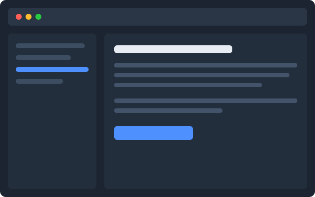

Tìm kiếm tức thì
Đánh chỉ mục toàn văn ngay trên máy. 50.000 ghi chú vẫn trả kết quả dưới 20 ms.
Không framework, không build step
Sổ Tay lưu mọi thứ dưới dạng văn bản thuần và đánh chỉ mục toàn văn. Mở được bằng bất cứ trình soạn thảo nào, kể cả khi chúng tôi đóng cửa.
Không cần thẻ tín dụng · Xuất dữ liệu bất cứ lúc nào

Đánh chỉ mục toàn văn ngay trên máy. 50.000 ghi chú vẫn trả kết quả dưới 20 ms.
Mỗi ghi chú là một file. Sửa hai máy cùng lúc thì giữ cả hai bản, không ghi đè lặng lẽ.
Một thư mục Markdown trên đĩa. Không khoá nhà cung cấp, không định dạng độc quyền.
0₫ mỗi tháng
Phổ biến nhất
79.000₫ mỗi tháng
199.000₫ mỗi tháng
Một thư mục trên máy bạn. Bản Chuyên nghiệp thêm một bản sao đã mã hoá trên máy chủ.
Có, gói AppImage và .deb. Cùng một nhân, khác lớp vỏ.
Không. File vẫn nằm nguyên trên đĩa; bạn chỉ mất phần đồng bộ.